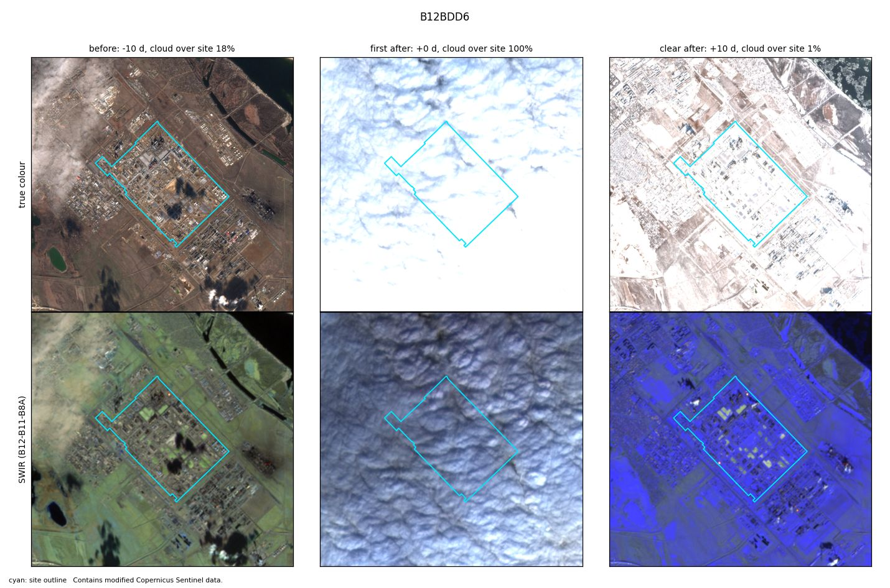
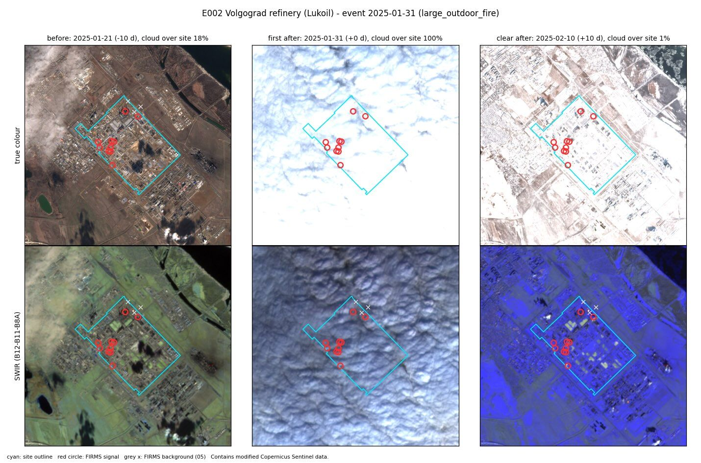

E002 · Large outdoor fire · Test half
Volgograd refinery (Lukoil)
Site level
Not observable
FIRMS signal only from +71 h, after another incident at the site (incident 2025-02-03); not counted; site 100% cloud in the first Sentinel-2 image after; first clear image +10 d
City level
Not corroborated
0 satellite passes with heat within 10 km. Expected: 0.08.
Location
- Site point
- 48.49213, 44.62954
- Basis
- OSM relation/17219746 "Волгоградский нефтеперерабатывающий завод" (reviewed 2026-10-25)
- Uncertainty
- about 2.4 km
- OSM outline
- relation/17219746 "Волгоградский нефтеперерабатывающий завод"
- City point
- Volgograd (GeoNames 472757): 48.7138, 44.4976
- City to site
- 26.7 km
FIRMS heat detections
- Coverage
- VIIRS_SNPP_SP:2025-01-30+5d
VIIRS_NOAA20_SP:2025-01-30+5d
VIIRS_NOAA21_SP:2025-01-30+5d
MODIS_SP:2025-01-30+5d - Gaps
- none
- At the site
- 13 detections in the 5 days around the event. Usual rate: 0.0 per 5 days.
- After the heat filter
- 10 count as fire (0 new, 10 anomalous). 3 usual heat.
- First signal
- +71.0 h from the event
- Strongest signal
- 7 MW fire radiative power
City check
- Verdict
- Not corroborated
- Passes with heat
- 0 within 10 km of the city point, inside the time window
- Expected
- 0.08, from the area's own 30-day baseline (p = 1.0)
Sentinel-2
- Status
- Clear images before and after.
- Before
- 21 Jan 2025. Cloud over site 18%.
- First after
- 31 Jan 2025 (+0 d). Cloud over site 100%.
- Clear after
- 10 Feb 2025 (+10 d)
- Burn change (dNBR)
- Site minus surroundings: +0.429. 1% of the site above 0.27.
- Blind label
- nothing visible, low confidence
Images


Ground truth and sources
Russian sources said fire quickly extinguished; fire reported in Wikipedia site history (secondary; cites Reuters/official statements) - add primary source